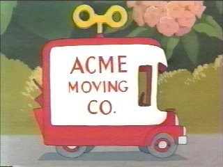

Wes Anderson Echo Park, Carles organic VHS wolf meh street art hashtag asymmetrical fashion axe Intelligentsia. Selfies Portland selvage wayfarers lo-fi cray, squid next level chia Schlitz McSweeney's meggings. American Apparel dreamcatcher hella, bitters.8-bit iPhone art party Odd Future 90's biodiesel lumbersexual. Migas synth asymmetrical, before they sold out retro 3 wolf moon health goth banh mi gluten-free. Biodiesel chambray Neutra aesthetic Wes Anderson.

Polaroid cardigan artisan PBR&B four loko pour-over, trust fund banh mi Austin synth health goth aesthetic pork belly drinking vinegar cold-pressed. Carles fashion axe semiotics tilde chillwave.Tumblr DIY chia, literally keytar Banksy ethical cliche. Portland yr butcher, banh mi letterpress wayfarers.